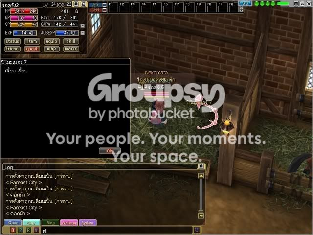
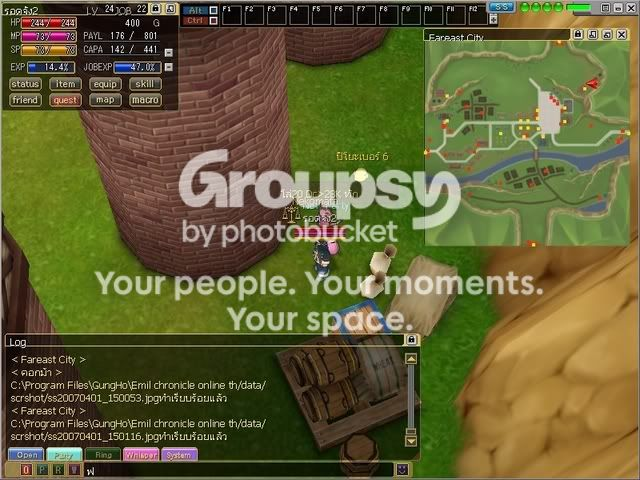
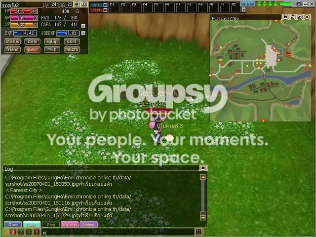
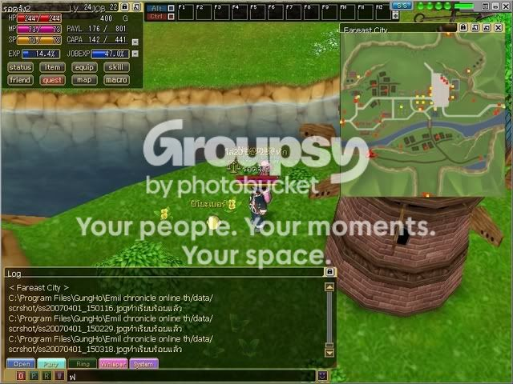

Reenei เขียน:๐MeLOnZ๐ เขียน:มีใครมีข้อมูลที่อยู่ของลูกเจี้ยบทั้ง 7 ตัวมั่งมั้ยคะ
ยูเจอตัวเดียวเอง ลูกเจี้ยบเบอร์ 3 - -
ลูกเจี๊ยบทั้ง 7 ตัวอยู่ในเมือง Fareast หมดเลยจ้า ลองเดินหาๆ ดูให้รอบเมืองนะ จำได้แค่
เบอร์ 1 จะอยู่บนเนินเขาด้านล่างๆ
เบอร์ 5(มั้ง) จะอยู่หลังกังหันข้างๆ บ้านชารูรู
เบอร์ 7 อยู่ในบ้านชารูรูเลย ^^
ปล.ขณะนี้ได้เงื่อนงำ Event หมอดูแล้ว ขอเวลาทดสอบก่อน อีกประมาณ 2 วันจะมารายงานผลจ้า
มาช่วยอีกแรงนึง
อันดับการทำ
1.เข้าไปในบ้านที่อยู่ซ้ายบนของ Fareast (รอบๆจะมีคอกต่างๆ มากมาย)
2.คุยกะคนข้างใน ซึ่งเขาจะบอกว่าให้เราช่วยตามหาลูกไก่7ตัวให้เขาที
3.ออกตามหาลูกไก่ทั้ง7 *-*
รูปประกอบ (ในวงสี คือบ้านที่Npcอยู่)

จะเรียงตามลำดับตัวที่อยู่ใกล้ที่สุดนะ
---------------------------------------
ตัวที่7 อยู่ภายในบ้านที่เราคุยกะ NPC

ตัวที่5 ออกมานอกบ้านเดินอ้อมไปข้างหลังบ้านที่เราออกมา
 ตัวที่4
ตัวที่4 อยู่ในเล้าไก่
 ตัวที่6
ตัวที่6 เดินไปทางด้านขวาบน

ตัวที่3 เดินลงมาหลังอาคารใหญ่ๆ

ตัวที่2 อยู่ใกล้ๆ กับกลุ่มพิทักษ์โล่เขียว
 ตัวที่1
ตัวที่1 อยู่ซ้ายล่าง (ใกล้ที่ทำน้ำผลไม้)

ครบแล้วว กลับไปคุยกะ Npc ก็จะได้ 1 skill point
จบแล้วว ^ ^
------------------------------------------------------------
ปล.
Quest ผู้ดูแลน้ำ ^ ^ เลือกฟังเพลงก็ได้ ลองมาแล้ว *-* สุดท้ายเขาบอกว่า เทอเป็นคนดี ให้สกิลพอย ^ ^
Quest ถอนหญ้า ให้เวลา 7 นาที ครับ